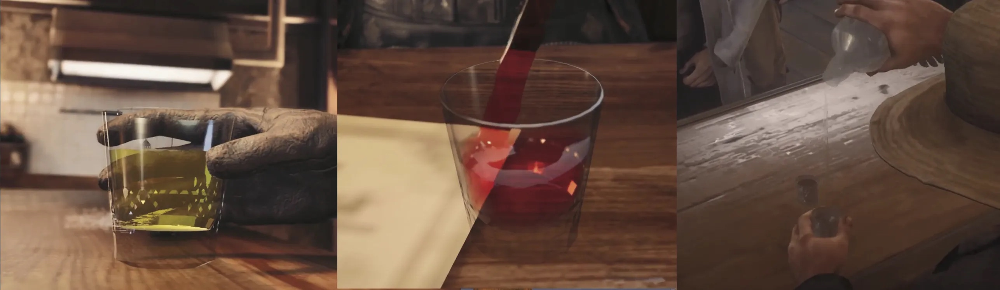
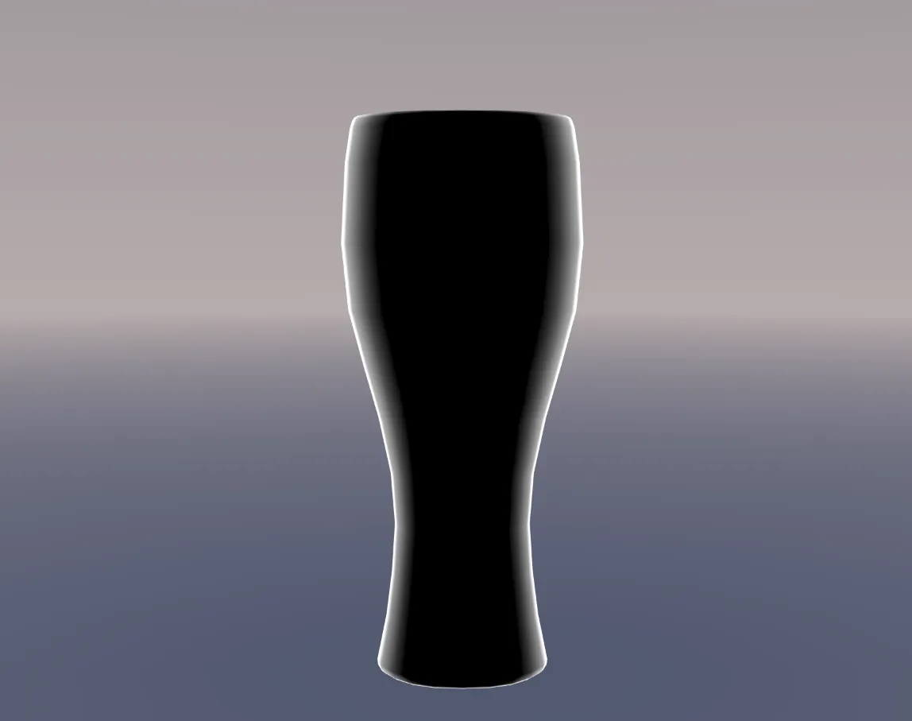
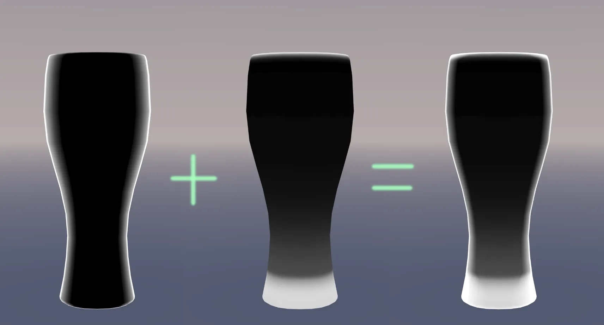
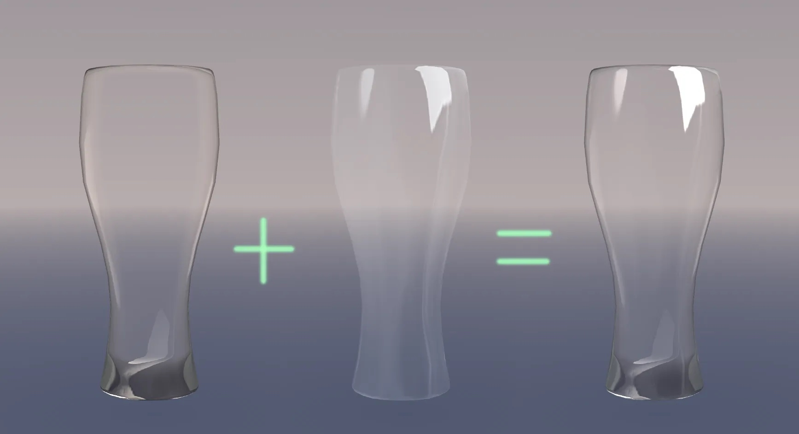
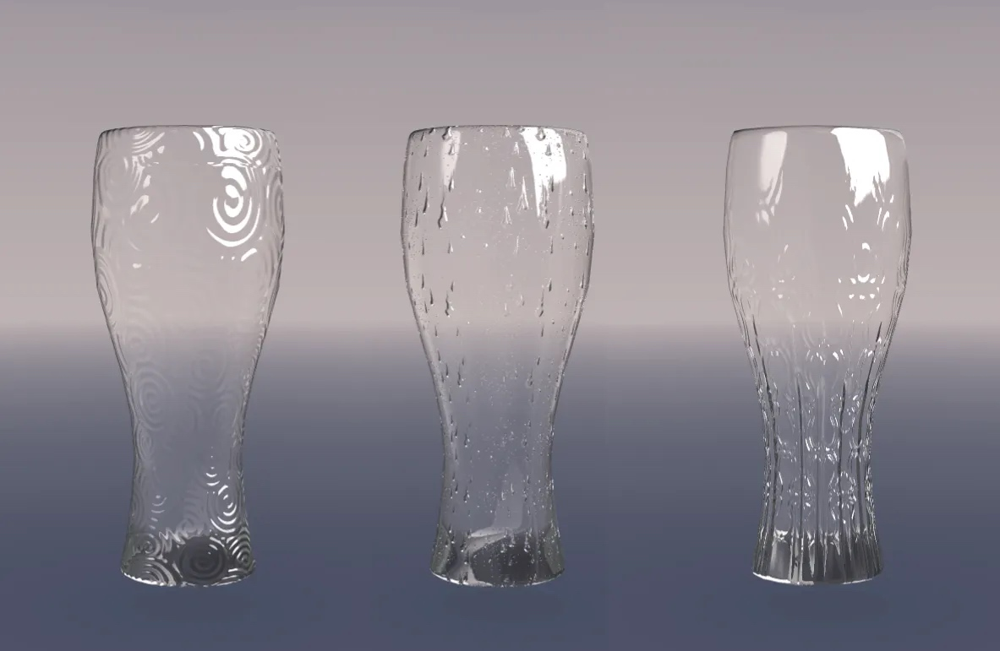
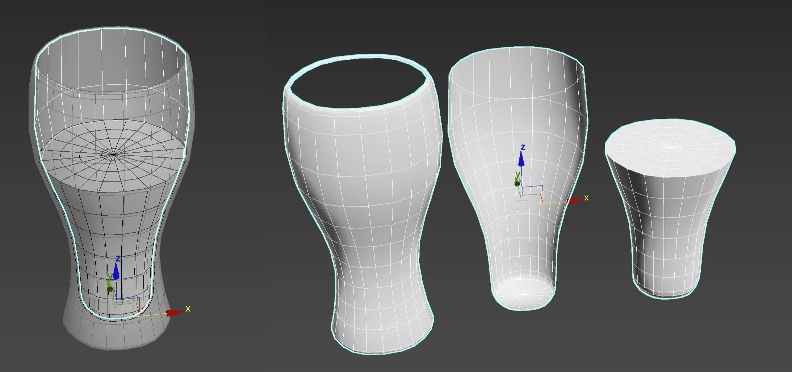
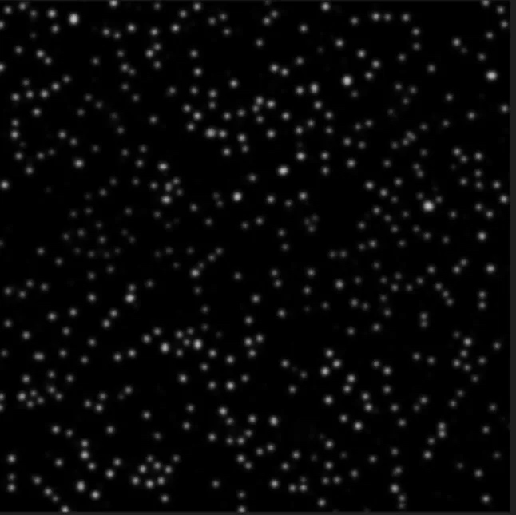
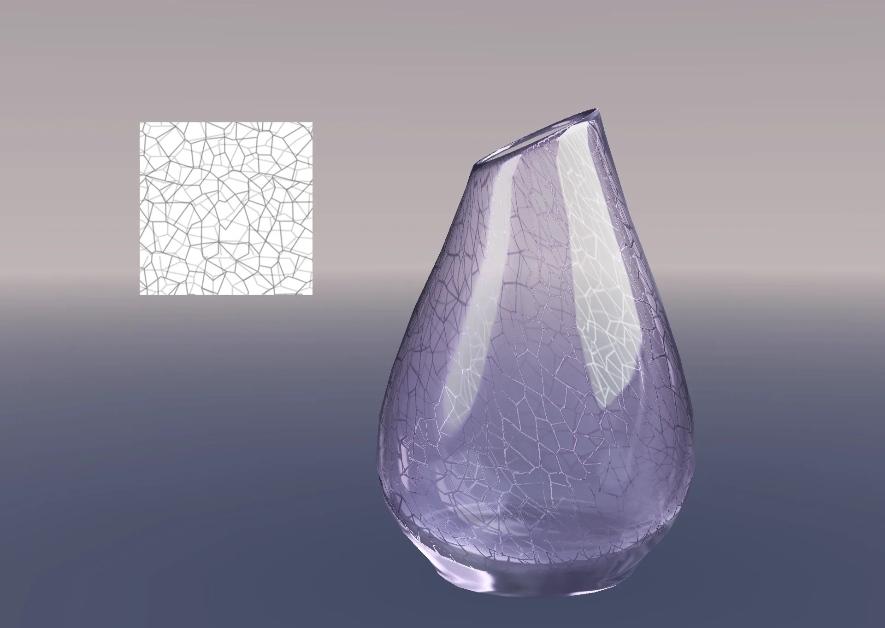

Due to device performance and calculation limits, we cannot do physical simulation (refraction and reflection) realtime, and most glass materials rendering is basically offline. Hence I come out a very low-overhead way to implement the glass material in Unity3D. This solution is very flexible and portable. It can be applied to PBR only by replacing the light reflection and environment reflection.
2. Motivation: Low-cost glass material rendering shader
Making the glass materials in mobile development is difficult, because the glass contains many features: reflection, refraction, thickness, etc. These characteristics require abundant calculations when rendering in real-time, however due to device performance limits, even in some console game, the render effect is not ideal. Here are realtime screenshots from some console game, including Final Fantasy VII Remake and Red Dead Redemption 2. As we can see in these screenshots, these glasses are not perfect - they miss some refraction features. Console Game Glass Effects
3. Problem
The glass itself is transparent, and there are two main points that affect the texture of the glass:
Reflection: glass reflects highlights in the environment.
Refraction: the glass thickness influences its refractive level. The thicker, the greater. Note here: the thickness would not influence the refractive index but the refractive visual effect.
The most difficult part is to figure out the refractive effect. However, in terms of human vision, strong refraction will interrupt the continuity of background. In position with strong refraction effect, things behind can no longer be seen clearly, which will make people feel that 'this area is not completely transparent' . You can only see a blurring background through the glass.
So I mainly start from this point to simulate the refraction visual effect. In order to improve the rendering performance, I use MatCap to sample the environment texture. I have some usage tips at my blog about how to use MatCap. - MatCap. You can check it out if you'd like. However, it is very flexible. You can replace PBR's ibl environment and realtime highlights based on your needs.
4. Code
Complete code in C# based Unity3D is at Github.
4.1 Environmental Highlights Reflection
The reflection part is relatively simple. You can process a glass highlight MatCap texture to handle the highlight reflection of the wine glass. On the left is the direct output of MatCap, and on the right is the output of MatCap as alpha.
_SpColor("Sp Color", Color) = (1.0,1.0,1.0,1.0)
// make a texture for highlight part to control the reflection visual effect
float3 spmatCap= tex2D(_CapTex,matCapuv);
spmatCap *=_SpColor.rgb
o.color.rgb = spmatCap;
o.color.a = spmatCap.r;
4.2 Glass RefractionRefraction
4.2.1. Glass refraction MASK
Before making refraction effects, first we need to calculate the range of refraction and determine the refraction area where refraction needs to be used.
A. The thickness range of the glass itself
We need to pre-process the glass thickness of the glass itself. For example, the bottom of the cup and the mouth of the glass.
The thickness here can be stored in 2 ways for output:
Preprocess a thickness texture.
Output by painting to a vertex color.
float3 thicknessTex= tex2D(_MaskTex, i.uv);
float sThickness = thicknessTex.r * i.color.r; //Solid glass part of the cup
I store the texture in the R channel, and the other channels can be left for later.
In this way we can get a manually controllable thickness range.
B. Glass side thickness
The edge part is calculated here using Finier.
_FenierEdge("Fenier Range", Range(-2, 2)) = 0.0
_FenierIntensity("Fenier intensity", Range(0, 10)) = 2.0
//~~~~~~~~~~~~~~~~~~~~~~~~~~~~~~~~~~~~~~~~~~~~~~~~
float3 V = normalize(_WorldSpaceCameraPos - i.worldPos);
float NoV = dot(N,V);
float EdgeThickness (in float NoV)
{
float ET = saturate((NoV-_FenierEdge)*_FenierIntensity);
return ET;
}
By adjusting the parameters we can get the edge range of the cup. 
Finally, combining the two ranges together, we get the complete glass refraction area. 
_FenierEdge("FenierRange", Range(-2, 2)) = 0.0
_FenierIntensity("Fenierintensity", Range(0, 10)) = 2.0
//~~~~~~~~~~~~~~~~~~~~~~~~~~~~~~~~~~~~~~~~~~~~~~~~
float3 V = normalize(_WorldSpaceCameraPos - i.worldPos);
float NoV = dot(N,V);
float3 thicknessTex= tex2D(_MaskTex, i.uv) ;
float sThickness = thicknessTex.r * i.color.r; //Solid glass part of the cup
float fThickness = thicknessTex.g;// Thickness of cup Fenir
float EdgeThickness (in float NoV ,in float eThickness )
{
fThickness = (eThickness -0.5)*0.5;
float ET = saturate((NoV-_FenierEdge+fThickness)*_FenierIntensity);
return 1-ET*eThickness ;
}
4.2.2. Simulate glass refraction
We need to use MatCap with a new UV sampling to simulate glass refraction, because we need to use the refraction mask obtained above to distort this MatCap texture.
However, you can use the same MatCap texture as the highlight, or you can create a new one separately. I am lazy and use the same one for the highlight
// Add a custom color parameter to _BaseColor
// then you can control the glass body color
float3 RFLerpColor (in float3 rfmatCap,in float Thickness)
{
float3 c1 = _BaseColor.rgb*0.5;
float3 c2 = rfmatCap*_BaseColor.rgb;
float cMask = Thickness;
Return lerp(c1,c2,cMask );
// Here you can also *v.color.rgb to control the local color of the glass with the vertex color to create a stained glass effect
}
After simulating glass refraction, we need to output the refraction MASK we made before as alpha, and the whole refraction part is finished.
Finally, the reflection and refraction are combined to output the whole effect. We are basically done on this part. 
float alpha = saturate(max(spmatCap.r*_SpColor.a ,Thickness)*_BaseColor.a);
//_SpColor is a separate color control for highlight colors
// The alpha calculation here is for that the transparency of the highlights can be controlled separately, as well as the transparency of the overall cup
col.rgb = rfColor+spColor; //combine reflection and refraction
col.a = alpha;
4.2.3. Add normal details
Because the accuracy of the model in the game is relatively low, in order to improve the surface details, we can also add a normal map. This allows for richer representations.
Because the above refraction MASK and MatCap mapping are calculated based on N (normal). So here we only need to calculate the normalMap. 
o.worldTangent =normalize(UnityObjectToWorldNormal(v.tangent));
o.worldBinormal = cross(o.worldNorm, o.worldTangent) * v.tangent.w;
o.uv.zw = TRANSFORM_TEX(v.texcoord.xy,_NormalTex) ; //(give the normals separate UVs so that you can use detail normals.
You can also use multiple sets of normal textures to blend)
o.uv.xy = TRANSFORM_TEX(v.texcoord.xy,_MaskTex) ;
//------↑VSout----------------------------------------------------------------------------------------------
void GetNormal(v2f I, inout float3 N)
{
float4 normalTex = tex2D(_NormalTex, i.uv.zw);
float3 normalTS = normalize(UnpackNormal(normalTex));
float3x3 tbn = float3x3(i.worldTangent, i.worldBinormal, i.worldNorm);
N = normalize(mul(normalTS, tbn));
}
PS. If you need a more realistic visual effect, you can use an RT to create the effect of the objects behind being refracted and distorted, but in fact, you don't need to add it at all.
Now we are done our job on realizing glass material. I will discuss more about its usages and give some its application examples in Discussion Part.
5. Results
All the effect pictures are real-time screenshots in Unity3D, no Tone mapping.
champagne beer
6. Discussion: More advanced usages about glass material
6.1 Frosted glass
In fact, frosted glass is very, very simple under MatCap, we only need to take the texture of MatCap into Photoshop for blurring.
If it is IBL, Phone, GGX and other high-light reflections, it can be processed directly according to the roughness method.
6.2 Multiple layers of glass and liquids
Now I have only done the outer surface of the cup, and the inside of the glass has not been processed yet.
Take a look at the cup model first, here are some points to note.
I divided the cup model into 3 parts:
Cup exterior
Cup inner wall
Liquid in a glass
The reason for distinguishing the inner and outer walls is mainly to solve the problem of wrong front-back relationship caused by translucent sorting. 
Here we create a new shader, or we can copy a copy of the previous outer wall shader and assign it to the inner wall model of the cup.
Inner wall material: It is recommended to adjust the parameters to remove the edge thickness, unless you are making a double-layer glass. The bottom part of the cup is controlled by the thickness mask (texture and vertex color are fine).
6.2.1 Add liquid material
Create a new liquid shader in the same way. Modify the color to make water, beer, red wine or other beverages.
Here, the thickness mask map texture is replaced with a small bubble texture. Used to simulate small bubbles in beer. 
At the same time, use animation to sample K keyframes for this texture, and add an animation of UV flow. You can make the effect of beer bubbles flowing.
6.2.2 About Render Hierarchy
Translucent material --- needs to modify the RenderQueue of the internal shader to -1 on the parameters of the external material. Otherwise, the context of the depth will be wrong at certain angles or complex models.
For example: the beer glasses above are rendered in the same order as the RenderQueue.
Cup exterior (3000) ← cup liquid (2999) ← cup interior (2998) Translucent part: In fact, just arrange them in the order we see them. Because when we see the whole cup, we first see the outer wall, followed by the liquid part, and finally the inner wall part. The smaller the value, the higher the rendering priority.
6.3 Glass with cracked ice effect
Use a cracked texture with a vertex color to paint the base thickness of the glass. It can simulate the effect similar to cracked glass. 
6.3.1 About the Adaptation of PBR Dynamic Environment
You can mix low-profile colors such as the ball association lighting and LightProbes of the environment with the refraction part, and it can change with the change of the environment color.
7. Caveats
This is not an academic article.
The author guarantee that the implementation has no complicated algorithms, no ray tracing, the solution could be without RT, without post-processing.
This solution is mainly from the visual aspects to achieve the final effect.
I love to help if you have any other question, idea or problem.